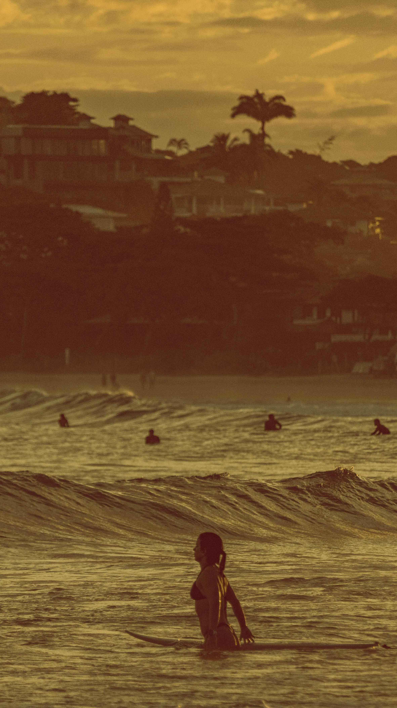
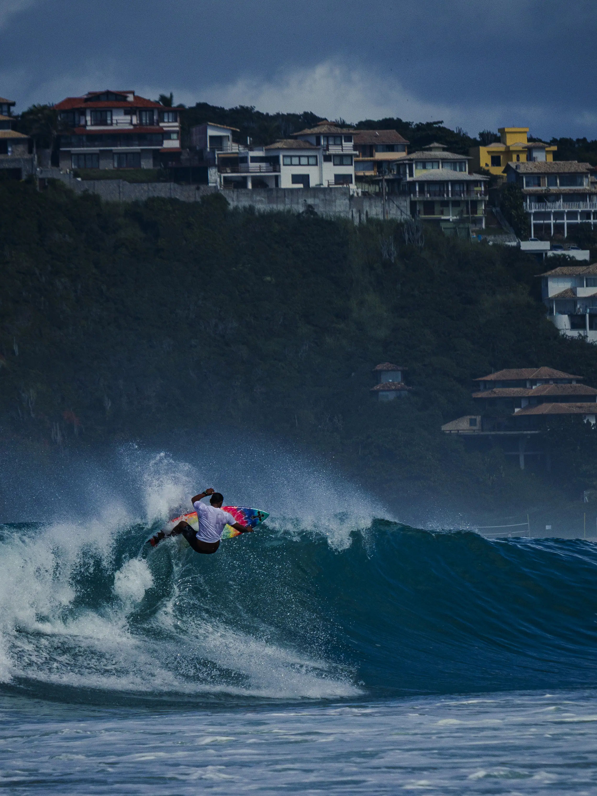
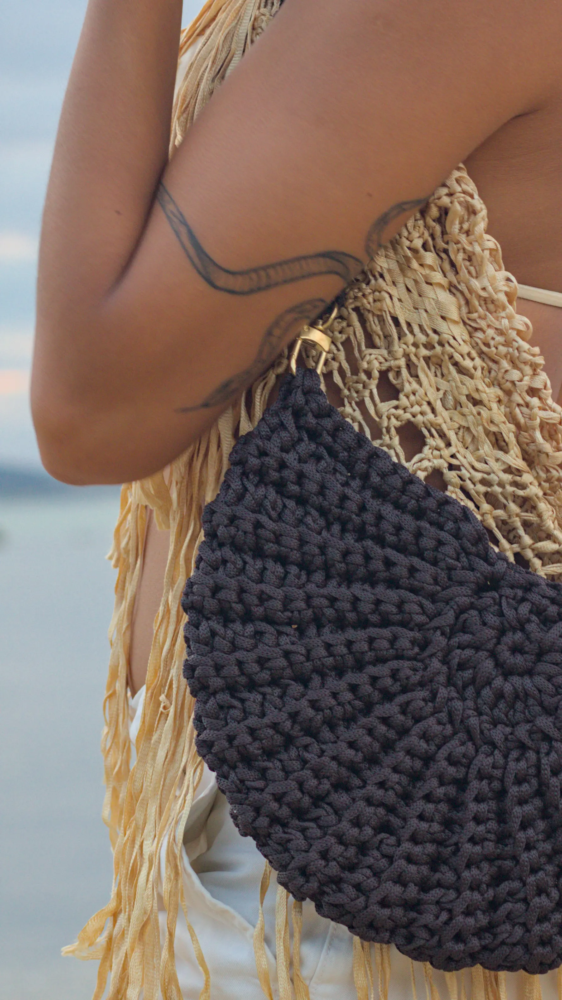

{{ t('bio_title') }}
{{ t('bio_p1') }}
{{ t('bio_p2') }}

{{ t('hero_desc') }}
{{ t('concept_p1') }}
{{ t('concept_p2') }}
{{ t('usp_1_desc') }}
{{ t('usp_2_desc') }}

{{ t('gallery_desc') }}



{{ t('polaroid_gift_desc') }}



{{ t('builder_desc') }}

{{ t('bio_p1') }}
{{ t('bio_p2') }}